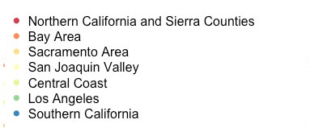
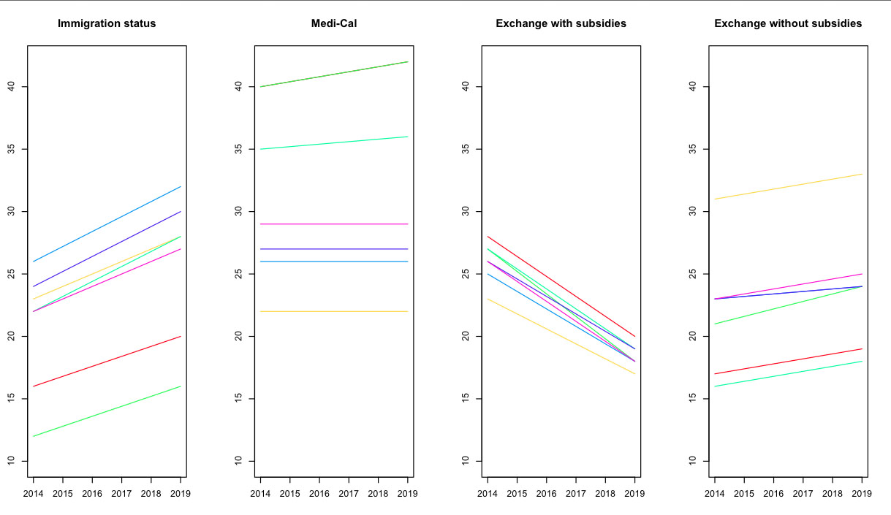

Millions of Californians Expected to Remain Uninsured After Obamacare
Experts estimate that between three and four million people living in California will be without insurance after Jan. 1, 2014. At present, researchers predict there are roughly seven million uninsured people here.


- The majority people who are expected to remain uninsured even after national health reform are Latinos — many because of their immigration status. Undocumented immigrants do not qualify for Medi-Cal, and are prevented from purchasing insurance through the state's insurance exchange. However, a the majority of Latinos left out of health coverage in California are lawfully present residents. Under Obamacare, you must maintain legal status in the eyes of the law for more than five years before becoming eligible.
This graph breaks shows the percent change of remaining uninsured between 2014 and 2019. The data takes into account — over time — how many people are eligible, which is why there is a uniform increase of remaining uninsured based on documention status. For example, in Los Angeles, the city with the steepest increase, more people will become eligible for some sort of coverage moving toward 2019. Other factors that contribute to these outcomes include English proficiency, lack of trust in health care professionals, and income.
Researchers at the U.C. Berkeley Labor Center, whose data are being used by state health policy makers, have found that Latinos are disproportionately affected by Obamacare — 66 percent will remain uninsured in 2019, but represent 45 percent of the state's population.
- The Affordable Care Act expands the state's low-income health coverage program, Medi-Cal, known as Medicaid in other states.
In California, as of Jan. 1, 2014, childless adults who earn incomes up to 138 percent of the Federal Poverty Level, or $15,545, will be able to sign up for low-income health coverage for the first time.
With millions of Californians newly-eligible, the state is in the beginning of a massive outreach and education campaign to get people signed up. Los Angeles and the San Joaquin Valley see increases in the percent of Medi-Cal eligible adults because in those regions, there are higher numbers of low-income residents who will become eligible but don't sign up.
- Between 1.8 and 2.7 million Californians are expected to gain coverage by 2019, and the majority of those people will become eligible for federal subsidies through Covered California, the state's health insurance exchange. All regions see a decline in the number of uninsured people because of this help.
- With everyone required to have some type of coverage, many Californians will be required to purchase private insurance through the state's insurance exchange, Covered California. The state is offering consumers, who are not offered insurance through their employers, a choice between four different tiered insurance rates ranging from bronze, to silver, gold, and platinum. The bronze carries with it the cheapest premiums per month, but comes with higher deductibles and copays if you become sick or experience an emergency. The platinum plan costs more per month, but has lower out-of-pocket costs.
This group is also comprised of medium-income earners, and people who are younger. While the law requires young health people to purchase insurnace or receive a tax penalty at the end of the year, thousands are expected to opt out and pay the penalty instead. This group is called the most important for Obamacare to work - they are a foundation of the health law, and targeted outreach efforts are underway to get them to purchase private insurance.